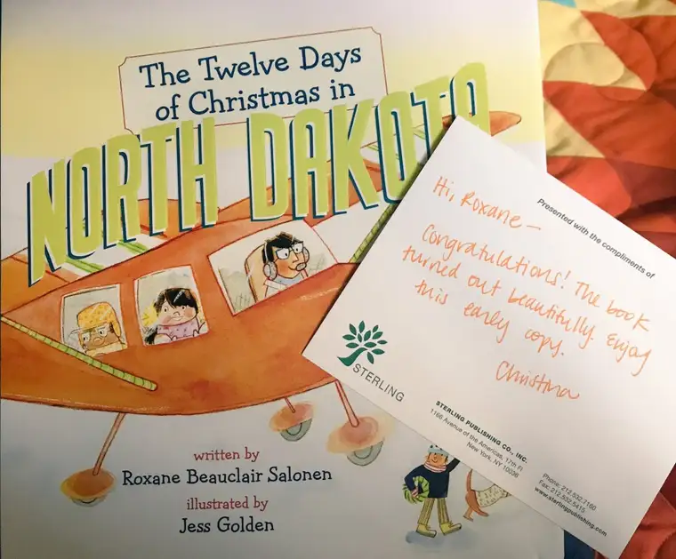

It’s only been a year since I held a book to which I helped contribute in my hands, but 12 years have passed since I opened a box containing one of my children’s books.
Well, this week it happened again, and I couldn’t be more thrilled!

After the publication of my first two children’s books in 2005, a third came into view, but the publishing company didn’t (they sank altogether from what I know), so that third book never happened. Perplexed by the changes in the publishing industry at that time and how best to navigate those new waters, I turned my attention elsewhere. Though I loved writing for — and speaking to — children, other kinds of writing seemed to be calling to me as well. I continued doing some school visits, but it wasn’t a full-time gig by any means, though always a pleasure.
Mainly, I forged ahead with where the Spirit led. And in these past years it’s certainly led me to some wonderfully interesting places, but never could it erase my earliest love and the hours I spent diving into the world of children’s literature. So when I received a tap from Sterling Publishing a few summers ago, asking if I’d be interested in auditioning for another book based on the great state of North Dakota, I jumped, happily and excitedly.
I remember being super busy during the time the audition piece was due, but I found a way to work it in. I knew that having a chance to write another children’s book would be pure blessing — an unexpected gift. I knew it would be wonderful to work on another children’s book about North Dakota in particular, so I waited to see if I’d be given the chance. And then the news came, and the journey commenced. I can now say that the experience of putting together this work has exceeded my expectations. It was a total joy!
Well, there were a few interesting bumps along the way, too, and I think that just makes the whole story even more interesting. I look forward to sharing more soon. For now, the link is already up on Amazon, and pre-orders are available. It would be great for this book to be given a nice jump start and have orders in wait. If you love North Dakota, children, or just want to learn about our humble, but fascinating, state, please consider it. You’ll have them before the holidays since official release is in early October, so the timing couldn’t be better.
Soon, I’ll give you more of the inside scoop on how this book was fashioned. There’s much to share. I can’t wait!
Q4U: What have you held in your hands lately that felt particularly good?